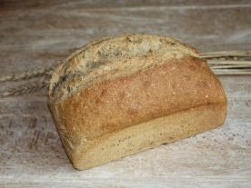
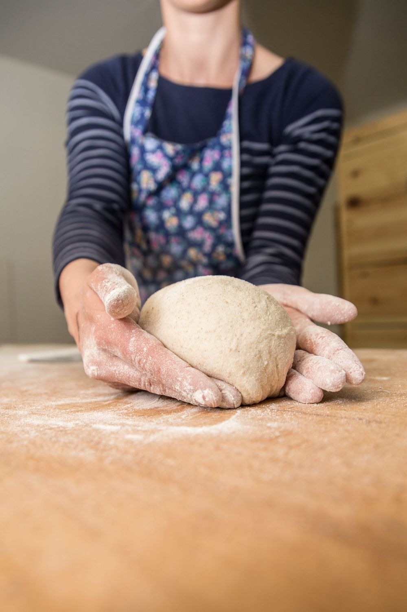
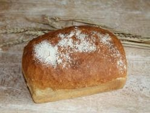
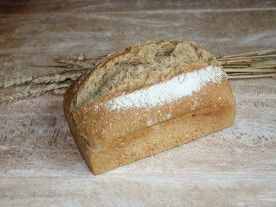
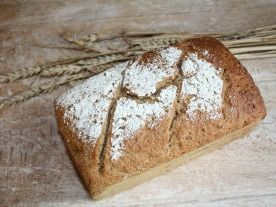
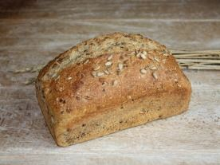
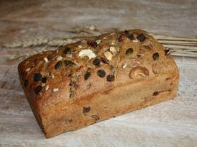
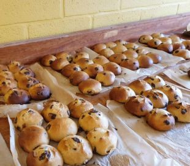
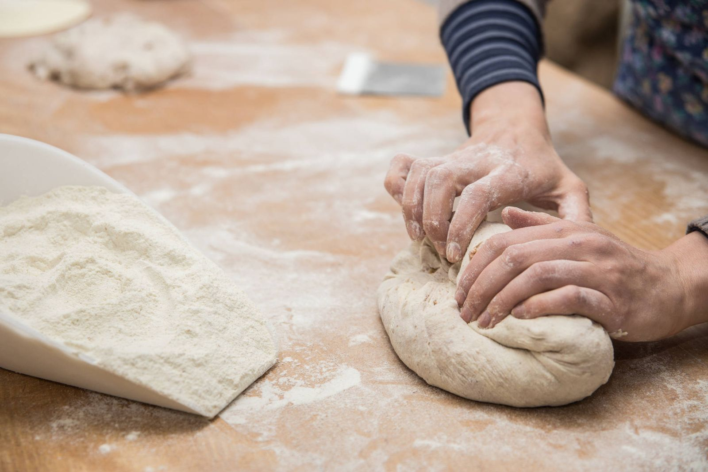
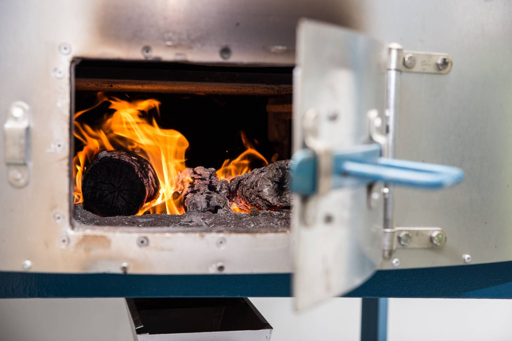

Au levainLe Doré de Froment au levain
Farine bio de froment T70, levain naturel, eau, sel.
600 g3 €
900 g4,50 €
Un pain de qualité à base de farines bio et belges, cuit sur pierre, fabriqué avec le cœur et les mains, sans engins ni poudre de perlinpinpin !
Vendredi 16h–20h · Samedi matin
Farines bio et belges, levain naturel, cuisson sur pierre. Deux formats pour la plupart des pains : 600 g et 900 g.

Au levainFarine bio de froment T70, levain naturel, eau, sel.

Farine bio de froment T70, levure, eau, sel.

Au levainFarine bio d'épeautre T80, levain naturel, eau, sel.

Au levainFarine bio de seigle T80, levain naturel, eau, sel.

Au levainFarine bio de froment T80, farine bio d'épeautre T80, graines de lin et de tournesol, levain naturel, eau, sel.

Noix & fruits secsFarine bio de seigle T80, noix et fruits secs, levain naturel, eau, sel.

Samedi matin uniquementFarine bio de froment T60, levure, eau, sel, beurre, lait, sucre, œufs.
Réservez vos pains au moins 24h à l'avance pour le vendredi ou le samedi : ils vous attendent au comptoir, au marché ou dans l'un des dépôts.
Passer commandeCommandes 24h à l'avance, afin de limiter le gaspillage alimentaire.
Un dépôt près de chez vous ? Pour connaître le point de dépôt le plus proche, ou pour en créer un chez vous, un mail à info@painprenelle.be !
Par respect pour le voisinage, mille mercis de privilégier la mobilité douce ou le parking devant l'église.


Je rêve que mon pain nourrisse les liens entre les habitants, comme tout petit commerce de village le faisait encore il n'y a pas si longtemps… Caroline, votre boulangère
Boulangère depuis 2015, formée par la pratique et la parlotte auprès de boulangers et de boulangères dont elle appréciait le pain et les qualités humaines. Farines moulues sur meule de pierre, levain nourri chaque jour, four chauffé au bois : découvrez comment naît votre pain.
Lire notre histoireSoit par mail via le formulaire ci-contre en précisant bien votre nom, prénom et les pains souhaités.
Commandes 24h à l'avance afin de limiter le gaspillage alimentaire.
Retrait le vendredi ou le samedi, à l'atelier, au marché ou dans l'un des dépôts. Voir les horaires
Merci pour votre commande !